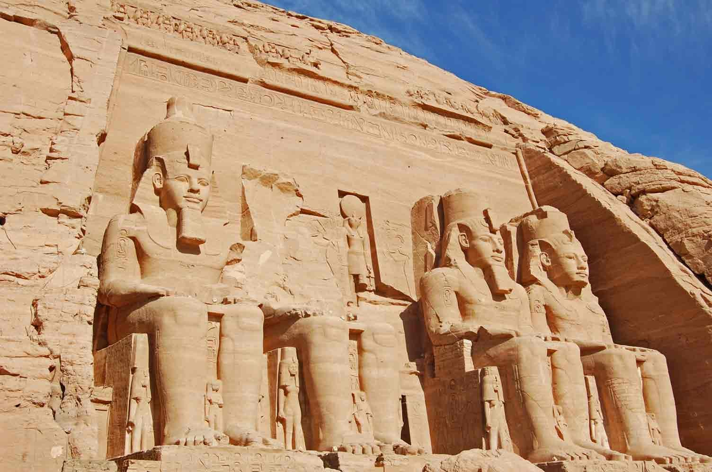
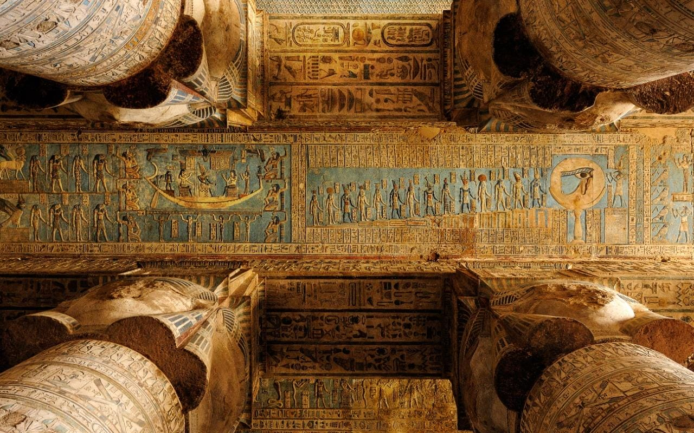
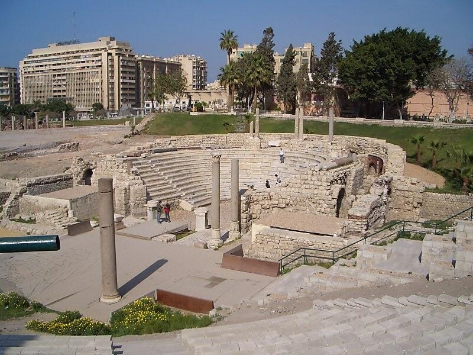

Egypt’s rich and diverse history spans thousands of years, from across the most important periods of ancient civilization into a flourishing contemporary era. Journey back in time to explore and admire sites and monuments from ancient Egypt to the Graeco-Roman periods, then fast forward to when Judaism, Christianity, and Islam influenced Egypt’s rich culture and heritage.
Visiting the monuments erected by the strikingly sophisticated people of ancient civilizations will give you remarkable insight into early systems of governance, religious rites, military conquests, complex record-keeping, ingenious architecture, and, of course, spectacular art that continues to inspire the worlds of design, literature, music, and all forms of artistic expression to this day. What’s even more miraculous is that many ancient Egyptian monuments are still standing and in remarkably good condition.
It’s almost impossible to visit a destination in Egypt that doesn’t have lasting evidence of the country’s rich past, with layers of history that take spectators on a journey up to the present day. Our museums, old and new, are also filled with priceless treasures spanning thousands of years of history. There’s a lot of historical ground to cover, so make a list and start ticking off your must-sees!

Egypt is home to seven spectacular UNESCO World Heritage Sites, where visitors can immerse themselves in ancient cultural legacy protected throughout the ages. Read More

Explore the UNESCO World Heritage site of Memphis and its necropolises, including the Pyramids of Giza, Saqqara, and Dahshur. Read More

A new era of political and cultural importance swept over Egypt with the arrival of Alexander the Great’s forces in 332 BC. Read More